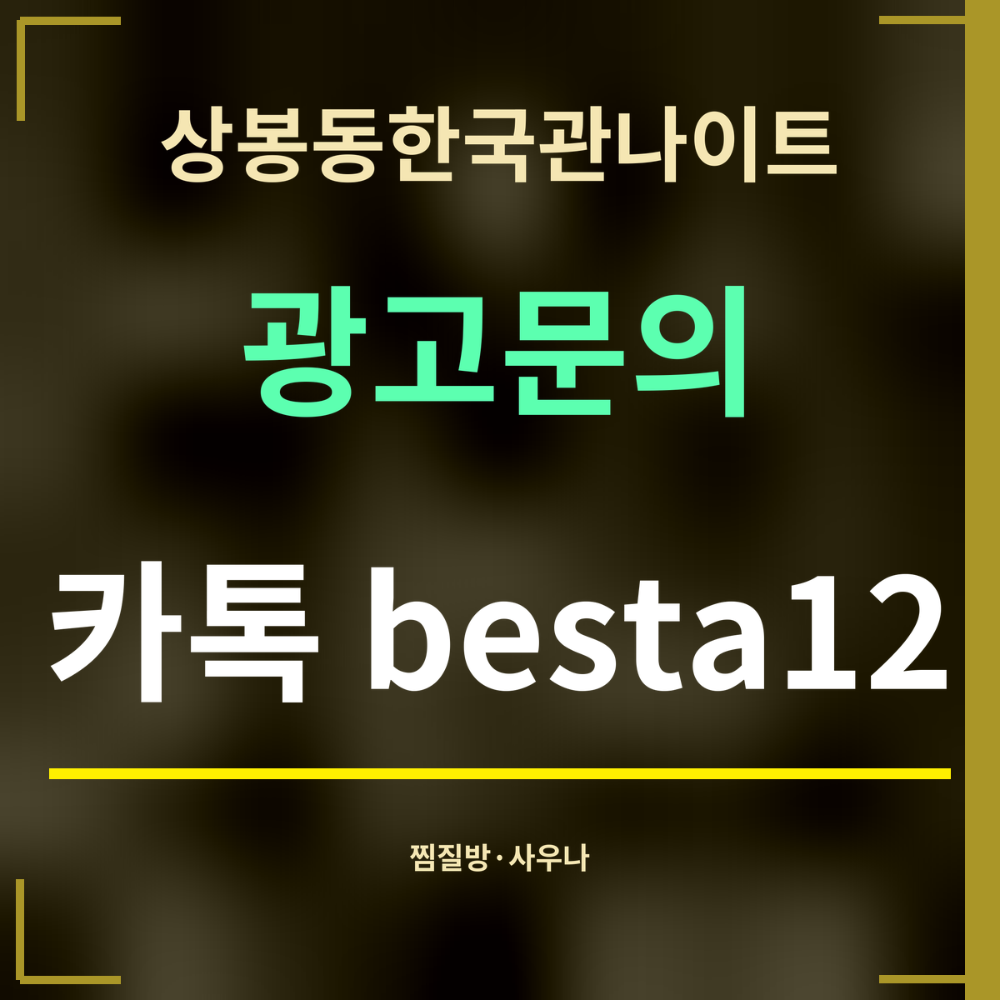

19세 미만 출입 금지
상봉동한국관나이트 근처 찜질방·사우나 정리, 500m 두 곳
제휴 없는 정보 안내 · 「상봉역 사우나」와 「상봉역 찜질방」 두 낱말로 카카오맵을 찾아(9월 27일) 겹치는 곳은 한 번만 적었습니다. 거리는 가게에서 곧게 그은 값입니다.

바로 답: 걸어갈 만한 곳은 해오름사우나 503m와 귀사문석찜질방 517m 두 곳입니다. 둘 다 상봉동한국관나이트에서 500m를 조금 넘습니다.
가까운 순서
| 이름 | 주소 | 분류 | 직선거리 |
|---|---|---|---|
| 해오름사우나 | 중랑구 망우로58길 33-6 | 목욕탕·사우나 | 503m |
| 귀사문석찜질방 | 중랑구 상봉중앙로 46 | 찜질방 | 517m |
| 대원사우나 | 중랑구 면목로 431 | 목욕탕·사우나 | 724m |
| 금강산한증막사우나 | 중랑구 겸재로49길 18 | 목욕탕·사우나 | 789m |
| 우림해수찜사우나 | 중랑구 봉우재로71길 18 | 목욕탕·사우나 | 892m |
| 호계대중탕 | 중랑구 봉화산로56길 153 | 목욕탕·사우나 | 910m |
| 편백나무자기장스파 | 중랑구 동일로129길 17 | 목욕탕·사우나 | 914m |
| 면목동회원목욕탕 | 중랑구 망우로63길 33 | 목욕탕·사우나 | 966m |
| 천지연불한증막스파월드 | 중랑구 용마산로 623 | 찜질방 | 1,516m |
| 휘경인삼사우나 | 동대문구 망우로 123 | 찜질방 | 2,025m |
고를 때 볼 것
이름이 비슷해도 성격이 다릅니다. 카카오맵 분류가 「찜질방」인 곳은 찜질 공간을 따로 두는 곳이고, 「목욕탕·사우나」는 씻는 곳 위주입니다. 밤을 넘겨 머물 생각이라면 찜질방 쪽을, 잠깐 씻고 나올 생각이라면 가까운 사우나 쪽이 맞습니다.
영업시간과 요금은 검색 목록에 나오지 않았습니다. 특히 새벽 시간에 열려 있는지는 곳마다 다르니, 가기 전에 지도 앱의 상세 정보나 전화로 꼭 확인하세요.
자주 묻는 것
가장 가까운 찜질방은요?
귀사문석찜질방(중랑구 상봉중앙로 46)으로 직선 517m입니다.
가장 가까운 사우나는요?
해오름사우나(중랑구 망우로58길 33-6)로 직선 503m입니다.
밤새 여나요?
밤샘 영업 여부는 이번에 찾은 정보에 나오지 않았습니다. 찜질방에 먼저 전화해 보세요.
한 줄 정리: 상봉동한국관나이트 둘레 500m 남짓에 사우나와 찜질방이 한 곳씩 — 영업시간은 가기 전에 확인하세요.
방에서 쉬고 싶다면 근처 숙소 8곳을 보세요.